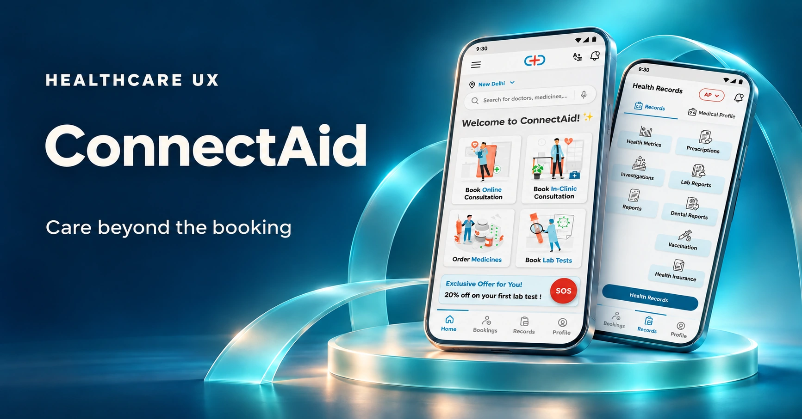
ConnectAid
A healthcare app prototype for booking care, finding medicines and tests, and returning to health records.
My part: core design system and remote testing coordination.
Read project summaryAI-native product designer
Hi, I’m Lakshya. Electronics taught me to ask how things work. Design taught me to watch how people make them work. I build prototypes to explore what could be easier.
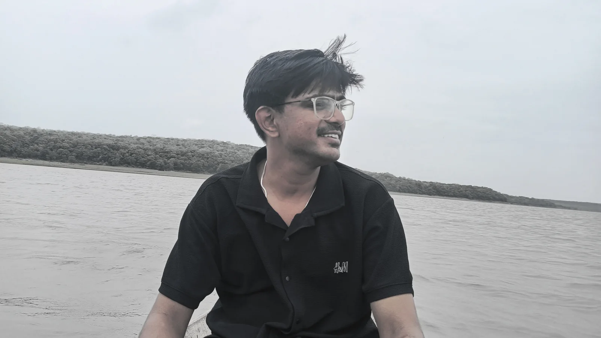
Explore a classroom game, a healthcare app, and a virtual world you open with both hands.
Eight projects

A healthcare app prototype for booking care, finding medicines and tests, and returning to health records.
My part: core design system and remote testing coordination.
Read project summary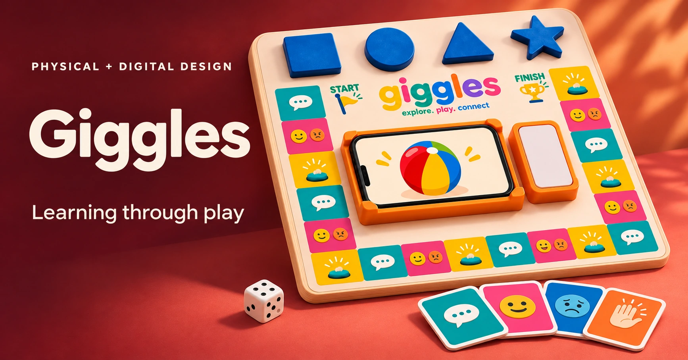
A learning game for autistic children that connects a physical board, answer cards and shape buttons to questions on a phone.
My part: electronics, game logic and the working prototype.
Read project summary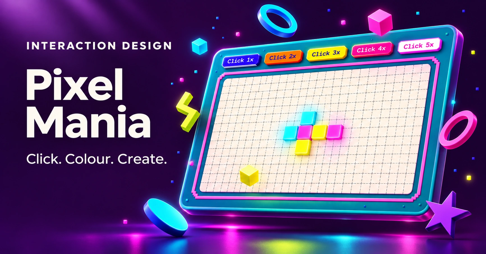
An open drawing board where clicking a square changes its colour. Make a picture, a name or a game of your own.
My part: visual system, interface and interaction prototyping.
Read project summary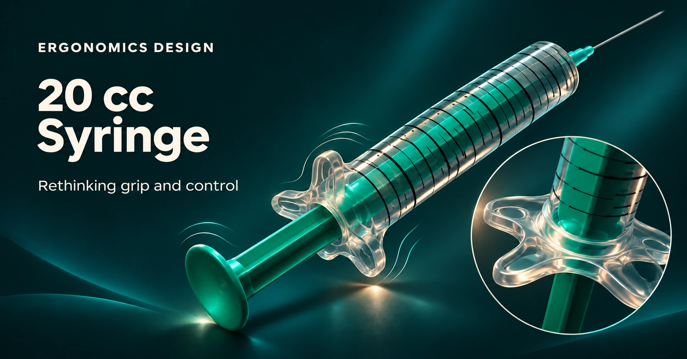
A 20 cc syringe redesign focused on a more secure grip, thumb support and readable dose markings.
My part: selected concept; shared research and 3D printing. Teammate: Maya modelling.
Read project summary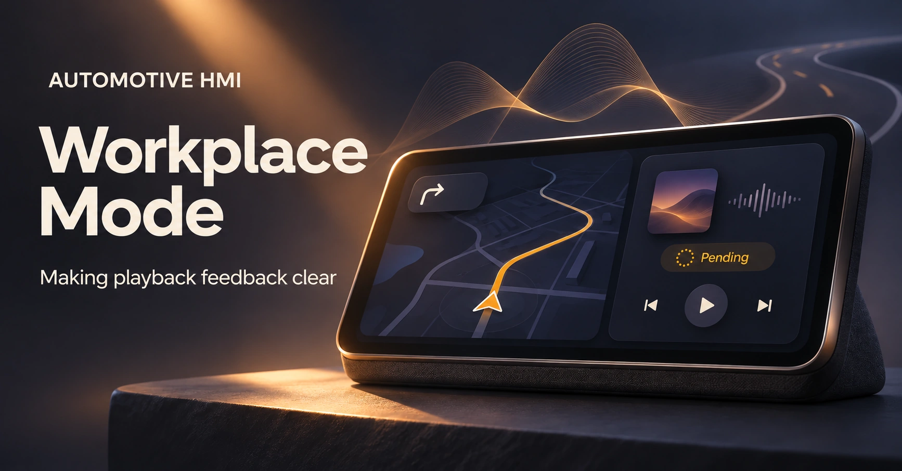
An in-car interaction study, narrowed to changing music and understanding playback response while keeping navigation context.
My part: research, synthesis and the interaction concept.
Read project summary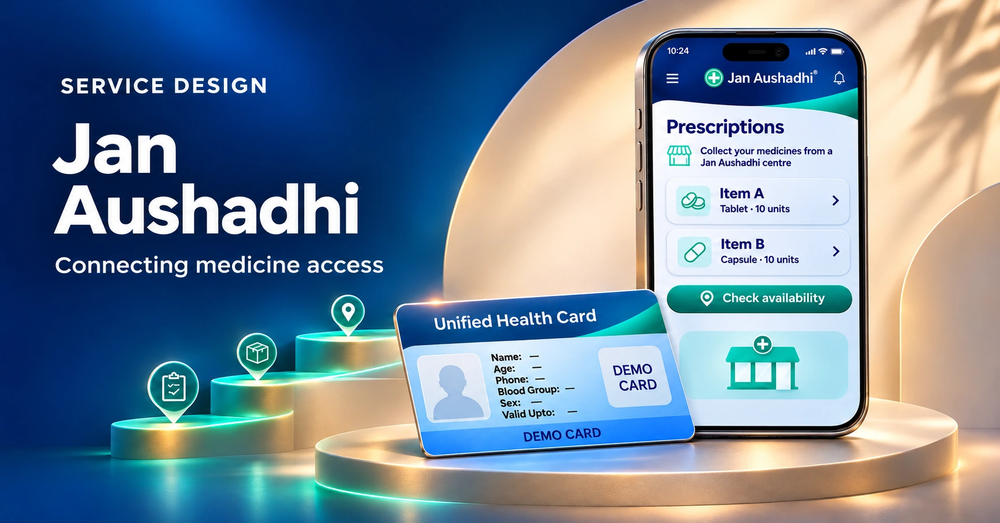
A team exploration of medicine access through a health card and app, a dispensing kiosk and RFID packaging.
My part: shared field research; later interface walkthroughs as a separate learning exercise.
Read project summary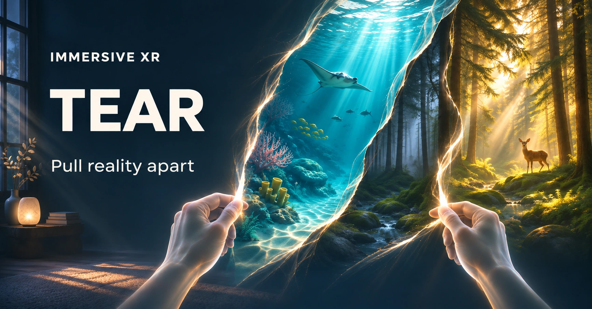
A dream journey opened by hand: curiosity becomes wonder, fear and uncertain relief.
My part: concept, gesture, emotional journey and art direction.
Read project summary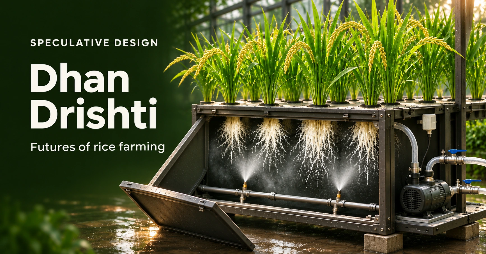
A secondary-research study of future rice farming, explored through four scenarios and four cultivation concepts.
Read project summaryProject summaries are also available in a simple reading view. Read all eight project summaries.
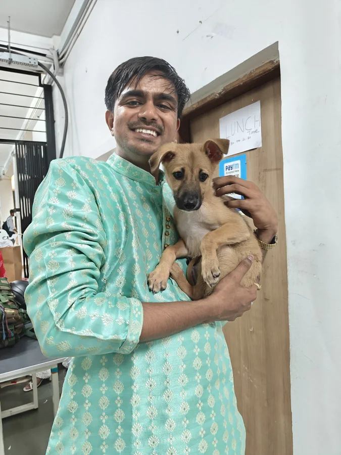
My route to UX started in Electronics & Telecommunication. I’m now studying User Experience at MIT ADT University.
At Baragaun, I took a responsive website from research to developer handoff. At Novae Avenue, I redesigned screens for a dashcam app.
Away from projects, I sing, dance Garba and photograph clouds. I performed at Junoon during my M.Des, and I still make time for Pokemon GO.
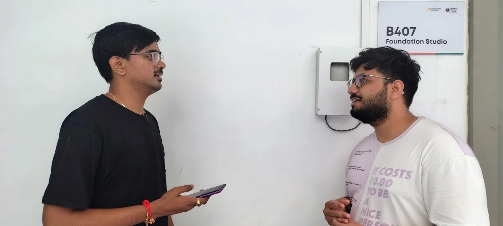
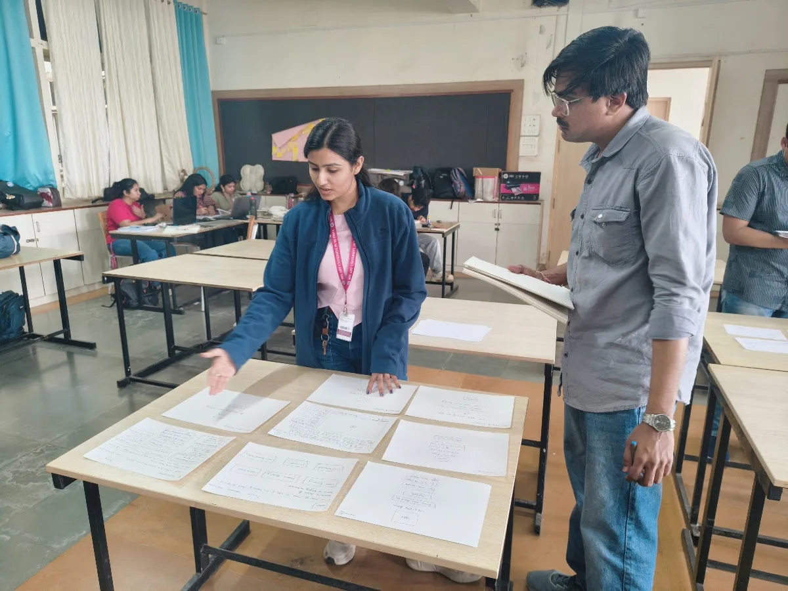
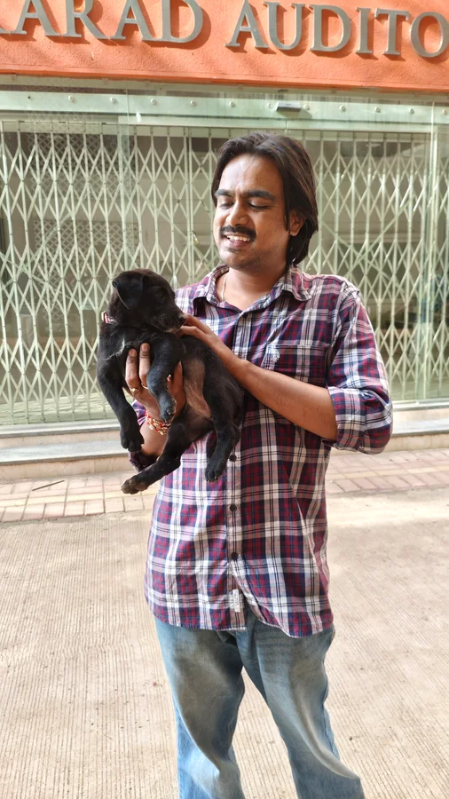
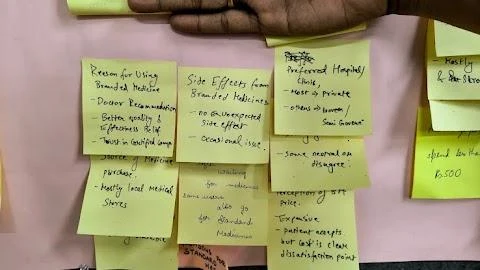
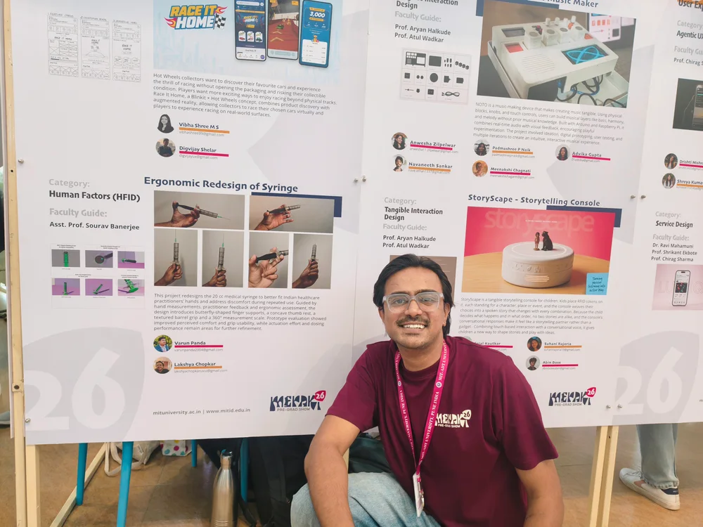
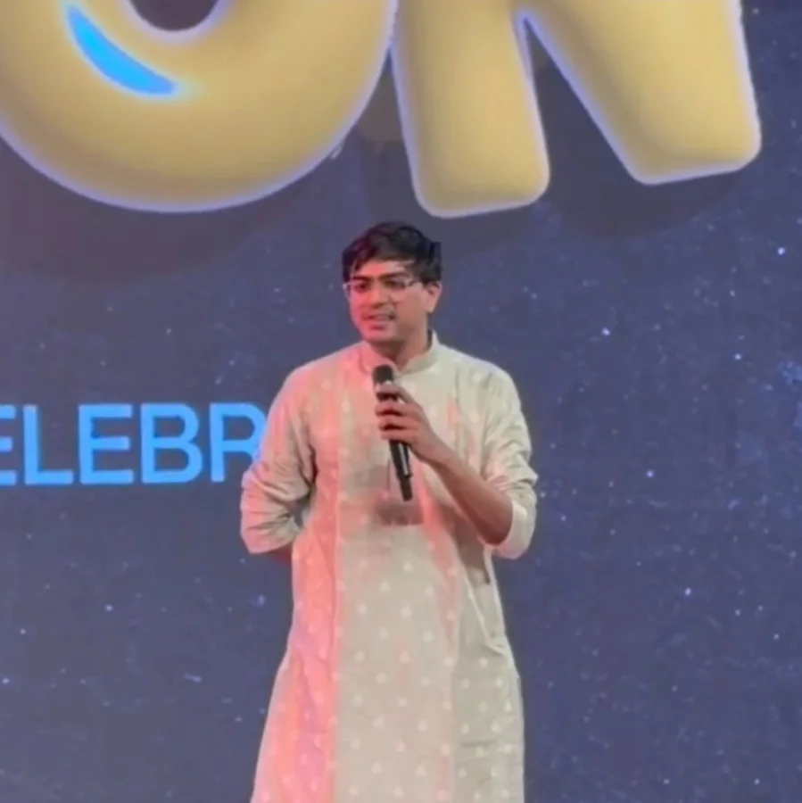
Choose an area to see how I research, design or build.
I start by understanding who will use the product, what they need and where they face problems. I use interviews, observation and surveys to collect information, then group the findings to decide which problems need attention. I also check existing designs and test prototypes with people to see what is clear and what needs to change.
I turn the findings into a clear order of steps, pages and actions. I sketch possible layouts, compare ideas and build a clickable prototype so people can try the design before it is developed. I use feedback and prioritisation methods to decide what to improve first.
I look at the complete experience, including the people, services and steps around the screen. Journey maps help me see where a problem happens; 5 Whys and Fishbone help me explore possible causes. I connect these findings so that a change in one part does not create a new problem elsewhere.
I discuss the problem, ideas and practical limits with my teammates so we can make decisions together. I explain my design choices and prepare the screens, components and notes needed for the next stage. In physical projects, I contribute concept development, electronics or prototype work according to my role.
My electronics background also supports physical prototyping: electronics and game logic for Giggles, and concept development and shared 3D-printing work for the syringe project.
With AI support, I build working demos to check interactions that are difficult to explain with static screens. I try the demo, compare its behaviour with the intended design and request focused changes. This helps me explore whether an idea works before it becomes a finished product.
I use AI support to build and revise working prototypes, then review the behaviour against the design intent.
I use AI to organise information, compare ideas, explore visual directions and help build prototypes. I give it a clear task and relevant context, then review the result against the sources and project needs. I check the facts, make corrections and take responsibility for the design decisions.
Different tools support different tasks. I review their output; this list describes use, not a proficiency ranking.
Product Designer (Contract)
Nov 2023 – Jan 2024
Designed layouts for a responsive website after competitor and secondary research; completed the design handoff for development.
Developed wireframes, mockups and an interactive prototype for a mobile app. Presented user flows in stakeholder reviews.
Product Design Intern
Jul 2023 – Aug 2023
Designed a data portal, landing page and brochure for customers of a 4G dashcam product.
Redesigned the dashcam app's customer-facing core and secondary screens.
MIT ADT University, Pune
Jul 2025 – Jul 2027 (expected)
SSIPMT Raipur
2019 – 2022
UX Design Process
Google · Coursera
UI/UX Training
Internshala
UX Workshop
GrowthSchool
Graphic Design Elements for Non-Designers Specialization
University of Colorado Boulder · Coursera
Basic Elements of Design: Design Principles and Software Overview
University of Colorado Boulder · Coursera
Textual Elements of Design: Fonts, Typography, and Spacing
University of Colorado Boulder · Coursera
Print and Digital Elements of Design: Branding and User Experience
University of Colorado Boulder · Coursera
Graphic Elements of Design: Color Theory and Image Formats
University of Colorado Boulder · Coursera
Fundamentals of Graphic Design
California Institute of the Arts · Coursera
Introduction to Imagemaking
California Institute of the Arts · Coursera
Ideas from the History of Graphic Design
California Institute of the Arts · Coursera
Seven stages of AI experience and user experience design
I organised 19 readings and three practice projects into a route other designers can follow at their own pace.
I keep the reference collection separate so you can go straight to a tool when you need one.
Ask someone to find a doctor in a booking app. Watch where they tap first. Do they type a specialty or look through a list?
Sketch one change that would let them follow their first instinct. This is the question behind our ConnectAid search redesign.
My projects, the music I make and the skies I stop to photograph—all have a place in the bicycle garden.
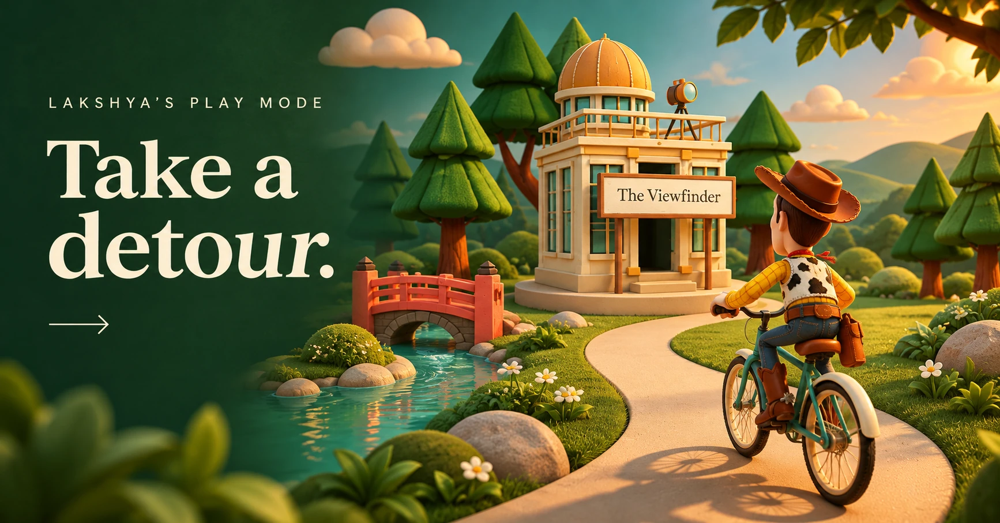
Ride between these places, or choose a destination on the map. The Portfolio switch brings you back to this reading view.
A small portfolio toy inspired by Pixel Mania. Tap a square to cycle through five colours.
I’m open to full-time product design roles, internships, and freelance projects.
I can help with UX research, interface design, or a prototype you can test. Tell me what you’re building and when you need it.
Email me about a project